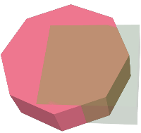

Name
ST_3DUnion — 3次元の結合を計算します。
Synopsis
geometry ST_3DUnion(geometry geom1, geometry geom2);
geometry ST_3DUnion(geometry set g1field);
説明
Availability: 2.2.0
Availability: 3.3.0 集約関数の形式が追加されました
 このメソッドにはSFCGALバックエンドが必要です。
このメソッドにはSFCGALバックエンドが必要です。
このメソッドはSQL/MM仕様の実装です。
SQL-MM IEC 13249-3: 5.1
この関数は3次元に対応し、Z値を削除しません。
この関数は多面体サーフェスに対応しています。
この関数は三角形と不規則三角網 (TIN)に対応しています。
集約関数形式: ジオメトリの集合を3次元結合したジオメトリを返します。ST_3DUnion()関数は、PostgreSQL用語で言うところの「集約関数」です。つまり、SUM()やMEAN()と同じ方法で複数のデータ行の操作を行い、他の集約関数と同じようにNULLジオメトリを無視します。
例
PostGIS関数ST_AsX3Dを使って3次元イメージを生成し、X3Dom HTML Javascript redering libraryを使ってHTMLでの描画を行います。
SELECT ST_Extrude(ST_Buffer(ST_GeomFromText('POINT(100 90)'),
50, 'quad_segs=2'),0,0,30) AS geom1,
ST_Extrude(ST_Buffer(ST_GeomFromText('POINT(80 80)'),
50, 'quad_segs=1'),0,0,30) AS geom2;
 元の3次元ジオメトリを重ねたもの。geom2は半透明で示しています。 |
SELECT ST_3DUnion(geom1,geom2)
FROM ( SELECT ST_Extrude(ST_Buffer(ST_GeomFromText('POINT(100 90)'),
50, 'quad_segs=2'),0,0,30) AS geom1,
ST_Extrude(ST_Buffer(ST_GeomFromText('POINT(80 80)'),
50, 'quad_segs=1'),0,0,30) AS geom2 ) As t;
 geom1とgeom2の結合 |